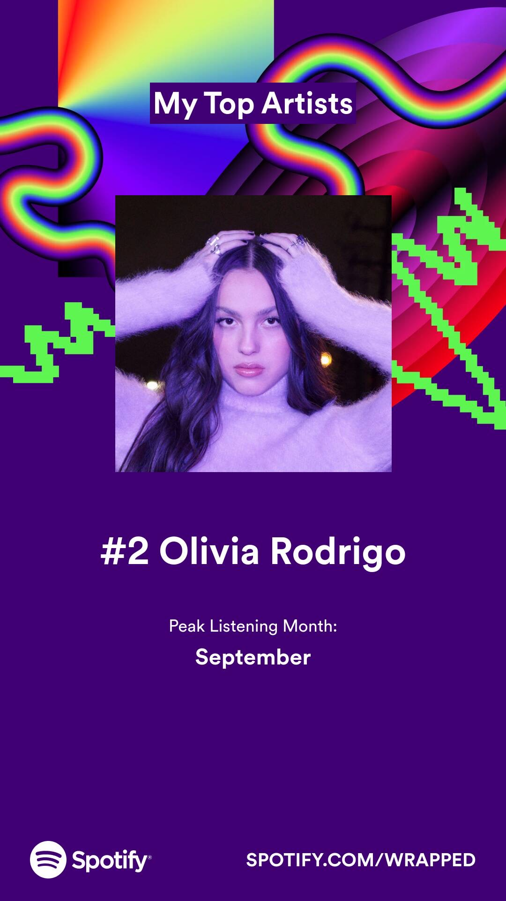
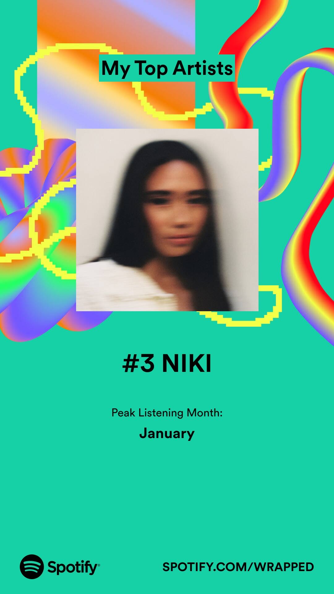
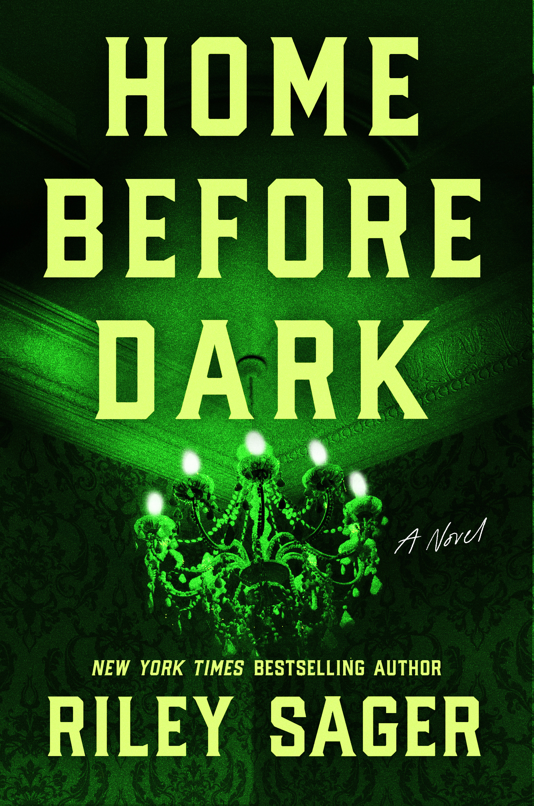
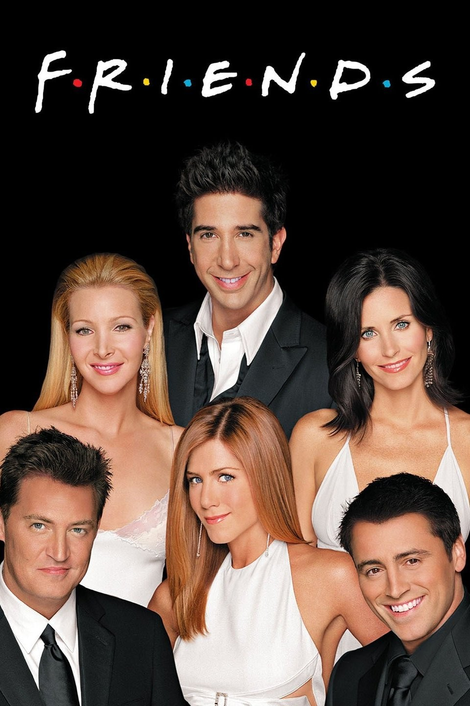
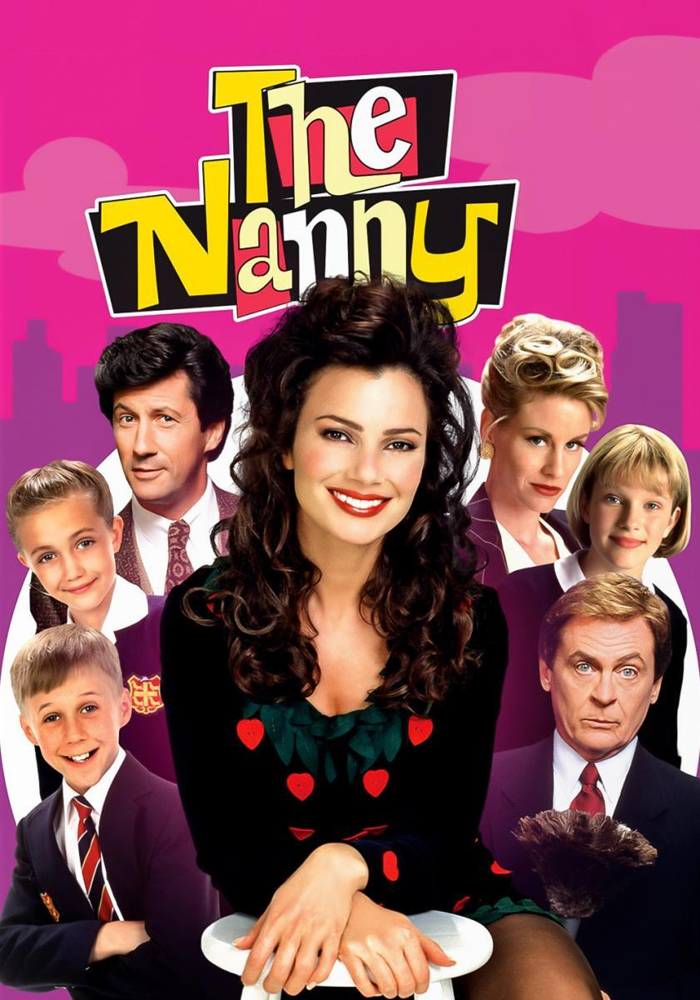
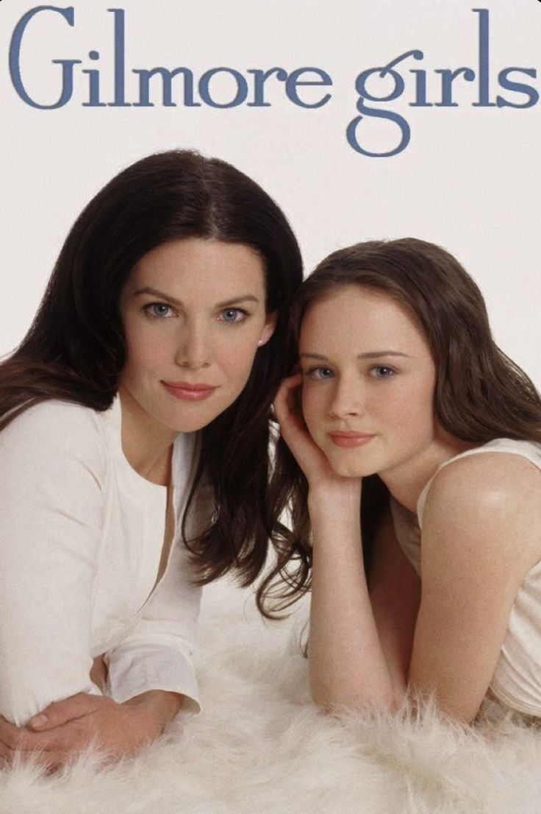
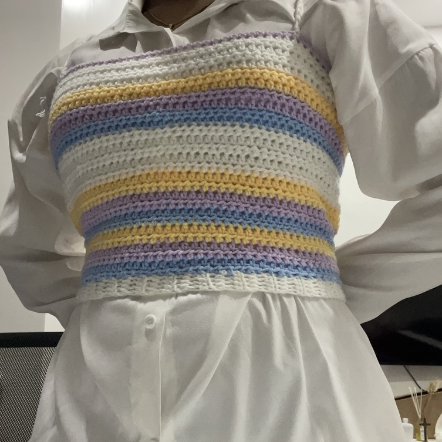
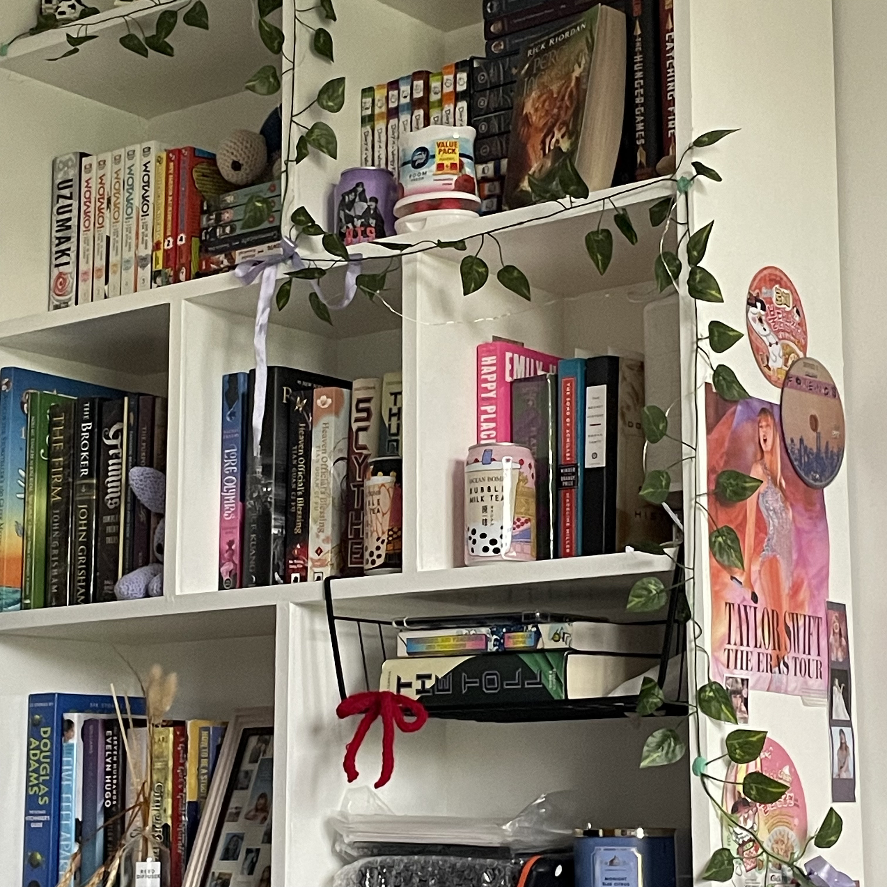

I love music; My dad exposed me to different genres as a kid,
so I sometimes randomly know songs from even the 70's (I love the Carpenters).
Taylor Swift
As they say, Taylor swift is the music industry. I think I started listening to her at the same time
I started to walk.
Olivia Rodrigo
Olivia was my top artist in Spotify Wrapped 2021! She's my #2 for 2023.

NIKI
She wrote one of my favorite albums of all time, 'Nicole',
created my favorite music video
(Backburner),
and possibly my favorite song of all time: Facebook Friends.

Books ❀❜
Arc of a Scythe (Book 1)
I read this book in January of 2023. It was so balanced with being both plot and character
driven. Rated 5/5.
Harry Potter and the Prisoner of Azkaban (Book 3)
Harry Potter has always been a comfort series of mine, in movies and books. I remember flying
through this book, cementing its place as one of my favorite books from the series so far. Rated 5/5.
Home Before Dark
I actually enjoy thrillers, especially when I'm looking for a quick, gripping read. This is one I can
recommend! Rated 4/5.

TV Shows ✧･ﾟ:
Friends
Friends is by far my favorite TV show of all time. It's my comfort sitcom;
I would say, Friends to shows is Taylor Swift to music for me.
Honorable mentions to my other favorite sitcoms: 'The Big Bang Theory' and 'Modern Family'.

The Nanny
I finished its 6 seasons in what felt like six weeks.
This show's fashion sense really influenced my favoritism
towards 90's to early 2000's fashion -3-

Gilmore Girls
Gilmore Girls is such an emotional rollercoaster. It made me cry, laugh, and even
romanticize studying..? I find myself channelling Rory whenever I see my to-do list.

⁀➷ Hobbies ❞
Crocheting
To me, crocheting is such a well-rounded hobby, as it's not only helpful for unwinding, but
also to create things, from clothes to stuffed animals!

Reading
I've loved reading for as long as I could remember. A good book can bring you to a different
universe you wouldn't want to go home from.

Painting
I'll admit that painting is so messy, but I remember days I'd just paint all day, and it
would always be fun. :D